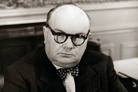

La Belgique, située au carrefour de l’Europe, possède une histoire riche et complexe. Elle fut successivement occupée par les Celtes, les Romains, les Francs, les Espagnols, les Autrichiens, les Français et les Néerlandais. En 1830, la Belgique obtient son indépendance et devient une monarchie constitutionnelle.
Le pays a connu deux guerres mondiales, une industrialisation rapide et une évolution vers un État fédéral. Aujourd’hui, la Belgique est reconnue pour sa diversité culturelle, ses trois langues officielles et son rôle central dans l’Union européenne.
Parmi les personnages importants de l’histoire belge :
 Léopold Ier
Léopold IerPremier roi des Belges (1831-1865)
 Adolphe Sax
Adolphe SaxInventeur du saxophone

Paul-Henri Spaak
Homme d'État, père de l'Europe
Homme d'État, père de l'Europe